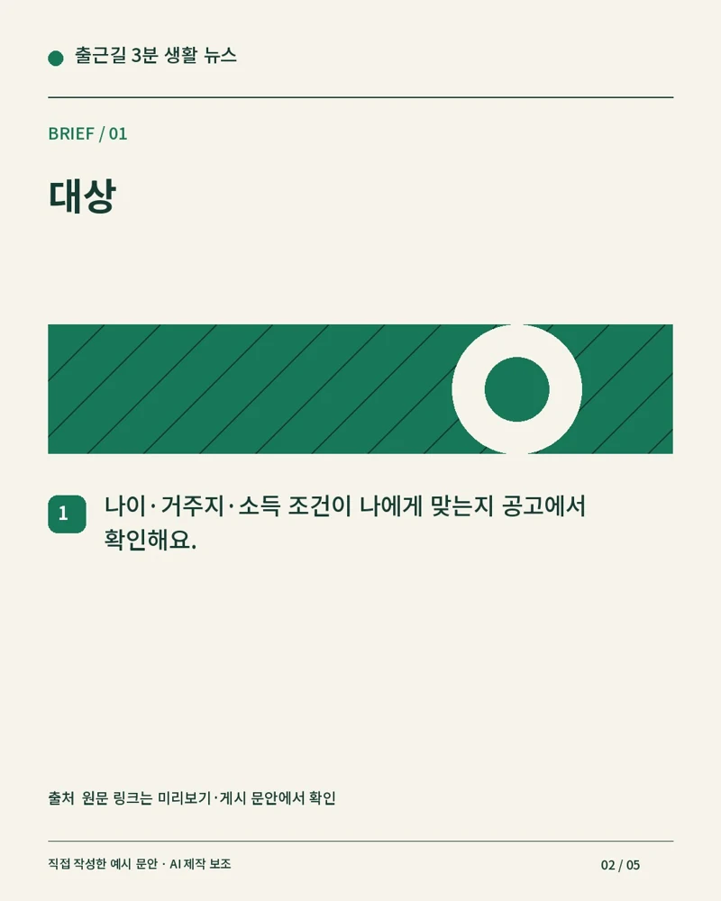
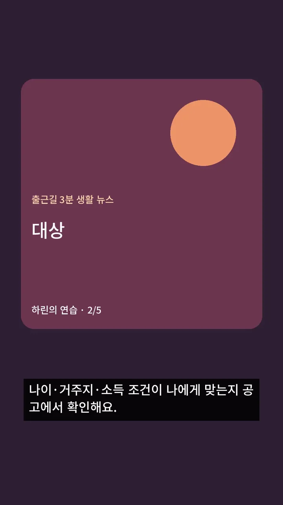

카드 글자는 코드로 써요
한글 폰트와 템플릿이 카드 모양을 정해요.
rendering/cards.py가 문안을 줄바꿈하고 카드로 저장해요. 게시에는 JPEG를 쓰고 PNG는 결과 확인용으로 남겨요.
실습 카드 1080×1350은 4:5예요. API 이미지는 JPEG·8MB 이하·너비 320~1440·비율 4:5~1.91:1이에요.[A007]
지금 할 일 · A0 카드 5장을 넘겨 보며 대상·기간·서류를 읽으세요.
심화편(API 자동화) · A4
이 장에서 만드는 것: JPEG 카드와 선택 MP4
2026년 10월 조사 기준 · 전체 진행표
문안은 Pillow 코드 템플릿으로 JPEG 카드에 넣고, 릴스는 ffmpeg로 음성·자막·장면을 조립하세요. 영상 생성 API 없이도 만들 수 있어요.
하린 「출근길 3분 생활 뉴스」를 매일 만들고 싶어요.
정 선배 오늘은 JPEG 카드와 선택 MP4부터 확인해요.
한글 폰트와 템플릿이 카드 모양을 정해요.
rendering/cards.py가 문안을 줄바꿈하고 카드로 저장해요. 게시에는 JPEG를 쓰고 PNG는 결과 확인용으로 남겨요.
실습 카드 1080×1350은 4:5예요. API 이미지는 JPEG·8MB 이하·너비 320~1440·비율 4:5~1.91:1이에요.[A007]
지금 할 일 · A0 카드 5장을 넘겨 보며 대상·기간·서류를 읽으세요.

카드 · 실제 JPEG 1080×1350의 축소본

릴스 · 실제 1080×1920 MP4의 4초 프레임
글·음성·사진을 ffmpeg로 묶어 MP4를 만들어요.
이 실습은 instagram.format만 reel로 바꾸고 mock 신호음을 넣어요. short.mp4·subtitles.srt가 만들어져요. 실제 낭독은 Google TTS나 본인 녹음으로 바꿔요.
릴스 API는 H.264/HEVC·AAC, 23~60fps, 3초~15분·300MB 이하를 안내해요. 키트 출력은 세로 H.264/AAC·30fps예요.[A007]
지금 할 일 · 아래 결과를 처음부터 끝까지 재생하고 자막이 읽히는지 확인하세요.
문자가 네모면 폰트 경로부터 확인해요.
media.font는 assets/fonts/NotoSansKR.ttf예요. 동봉 라이선스 OFL을 유지하세요. pip의 imageio-ffmpeg 바이너리로 렌더하고 ffprobe가 없으면 ffmpeg 검사기를 사용해요.
음량 기본 목표 -16 LUFS, 관문 범위 -19~-13은 키트 운영값이에요. API의 의무 숫자로 읽지 마세요. 자막은 장면 시간 배분이며 발음에 자동 정렬되지 않아요.
지금 할 일 · 배포할 폰트·소재·음악·ffmpeg 빌드의 사용/재배포 조건을 확인하세요.[A054]
터미널은 명령을 입력하는 창이에요. 아래 명령은 auto-kit 폴더에서 실행하세요. A0의 설치를 먼저 마치세요. 새 창을 열면 macOS는 source .venv/bin/activate를 다시 실행해요. RUN_ID는 직전 실행이 출력한 실제 ID로 바꿔요.
A2의 config.json과 private 폴더가 있어야 해요. 다음 명령은 기존 설정을 보존한 채 릴스 연습 설정 파일만 추가해요.
.\.venv\Scripts\python.exe -c "import json; from pathlib import Path; p=Path('config.json'); c=json.loads(p.read_text(encoding='utf-8')); c['instagram']['format']='reel'; Path('private/reel-config.json').write_text(json.dumps(c, ensure_ascii=False), encoding='utf-8')"
.\.venv\Scripts\python.exe pipeline.py run --flow insta --provider mock --mode auto --config private/reel-config.json --state private/a4python -c "import json; from pathlib import Path; p=Path('config.json'); c=json.loads(p.read_text(encoding='utf-8')); c['instagram']['format']='reel'; Path('private/reel-config.json').write_text(json.dumps(c, ensure_ascii=False), encoding='utf-8')"
python pipeline.py run --flow insta --provider mock --mode auto --config private/reel-config.json --state private/a4insta · dry_run과 미리보기가 보여요. 실행 폴더의 short.mp4가 세로로 재생되고 subtitles.srt가 있어요. gates.json의 specification.passed가 true예요. 신호음은 실제 내레이션이 아니에요.
| 표시·오류 | 해결할 일 |
|---|---|
| 한글 폰트 파일이 없습니다 | media.font와 assets/fonts/NotoSansKR.ttf를 확인해요. |
| 소재 파일 수와 장면 수를 맞추세요 | 보유소재 폴더의 파일 개수를 scenes와 맞추고 파일명 순서를 확인해요. |
| 음량 LUFS 기본 범위 밖(무음 포함) | 녹음이 무음인지 확인하고 원본을 재생하세요. 키트 음량 보정 뒤 다시 검수해요. |
한글은 로컬 코드 템플릿에 넣으세요.
예: 대상·기간·서류를 draft.json에서 읽어 Pillow가 써요. 실제 카드를 확대해 읽으세요. 해당 단계로 →
ffmpeg 조립만으로 릴스를 만들 수 있어요.
그림 장면과 본인 녹음을 먼저 연결하세요. 생성 영상 비용은 선택이에요. 해당 단계로 →
A0 pip 설치에 실행 바이너리가 포함돼요.
doctor의 pip ffmpeg 실행 가능을 확인하세요. 폰트 네모는 media.font를 점검하세요. 해당 단계로 →
gates.json의 specification.media를 보세요.
width·height·duration·video_codec·audio_codec가 기록돼요. 미리보기도 재생하세요. 해당 단계로 →
지금 할 일 · JPEG 카드와 선택 MP4을 열어 보고 전체 진행표에 기록하세요.
JPEG 카드와 선택 MP4
다음 장 →